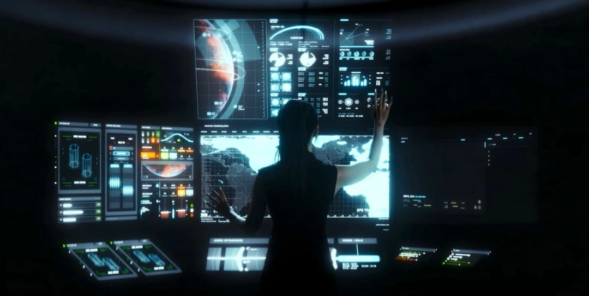
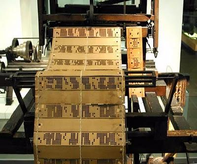

Venha entender uns dos assuntos mais importantes da engenharia de software voltada para o desenvolvimento de interfaces.
Interação Humano-Computador (IHC)
Definição
É um campo de estudo que busca se aprofundar nas relações humano-computador, focando na criação de interfaces agradáveis e intuitivas para o usuário. O estudo inclui diversas áreas como psicologia, design e engenharia e tecnologia para melhorar a experiência digital.
Características
- Estudo das características humanas (memória, visão, percepção, atenção, aprendizado, linguagem, etc) em busca de maximizar a experiência do usuário para a melhor possível, baseada nos seguintes princípios:
- Usabilidade;
- Acessibilidade;
- Comunicabilidade;
- Segurança e confiabilidade;
- Eficiência cognitiva;
- Estética e design.
Mudanças

No início da computação, os computadores eram enormes, nada acessíveis ao público geral e ocupavam salas inteiras. Não haviam interfaces, todas as instruções necessárias eram feitas por cartões perfurados ou fitas magnéticas. Depois de dias, os resultados eram apresentados e caso houvesse algum erro, era necessário refazer todo o processo.
Resumo
Essa atividade consistiu na criação de uma página web explicando os fundamentos de Interação Humano-Computador(IHC) e aprender a base do HTML.
O que eu fiz:
Para isso, criei uma pasta reservada para o projeto. Utilizando o VS Code, criei um arquivo e estruturei a base da página. No código, implementei tags de listas ordenadas e não ordenadas, botões, links, formatações de texto, imagens, etc. Como não houve limitação, também usei CSS e Javascript para aprimorar a página, tendo em vista que eu já tinha conhecimento prévio.
O que foi pesquisado:
A fim de estudar os conceitos IHC, o projeto foi elaborado por meio de pesquisas por PDFs e sites. Busquei estruturar o site com minhas próprias palavras, assegurando que aprendi os conceitos essenciais da matéria sem o uso de Inteligência Artificial.